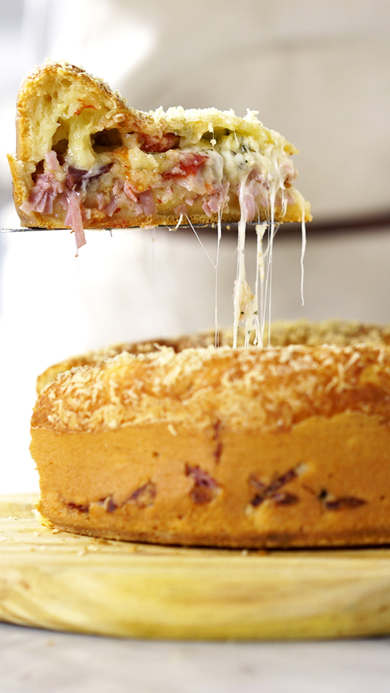

Bolo de Pão de Queijo

Receita do Bolo de pão de queijo
Ingredientes
- 3 xícaras de polvilho azedo
- 3 ovos
- 1 xícara de queijo minas padão ralado
- 1/2 xícara de azite ou manteiga
- 1 xícara de leite de coco
- Pitada de sal
- 1 colher de chá de fermento químico
- 200g de calabresa
- 100g de bacon picado
- 100g queijo mussarela
- 1 xícara de queijo parmesão
Modo de preparo
- No liquidificador, bater o polvilho, os ovos, o queijo minas, o azeite e o leite.
- Dispor em uma tigela, adicionar o sal e misturar.
- Dispor a metade da massa em uma forma untada e enfarinhada.
- Colocar a calabresa picada, o bacon, o queijo muçarela ralado.
- Cobrir com o restante da massa e polvilhar com o queijo parmesão.
- Levar ao forno preaquecido 180 graus por, aproximadamente, 40 minutos.